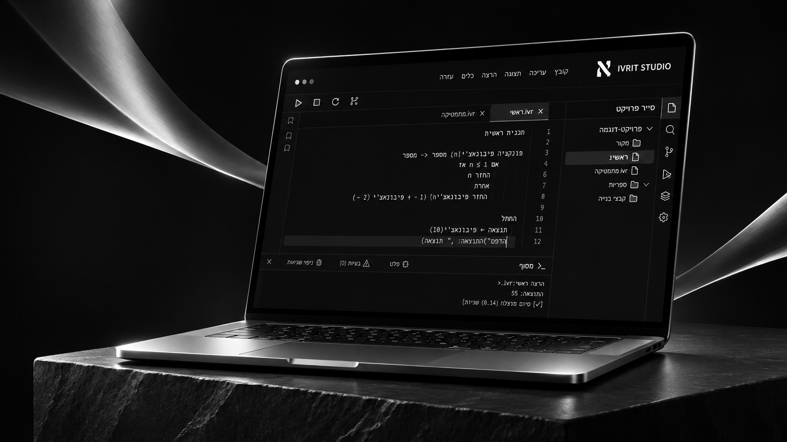

↤
01
RIGHT TO LEFT.
A native RTL code surface, created for the flow of Hebrew rather than fighting against it.
 IVRITSTUDIO
OPEN STUDIO ↗
IVRITSTUDIO
OPEN STUDIO ↗
Everything begins from the other side.
Write it. Read it. Run it. Right to left.

Ivrit is an experimental programming language with Hebrew keywords and native right-to-left editing. Familiar logic, expressed in an entirely different direction.
EXPERIENCE THE EDITOR ↗One click away from a dedicated Hebrew right-to-left development environment.
A native RTL code surface, created for the flow of Hebrew rather than fighting against it.
Variables, conditions, loops, functions and expressions with Hebrew-language keywords.
Write and execute directly in your browser. No installs, no setup, no waiting.
Save your experiments as .ivrit files and keep working on your own terms.
An independent experiment in what programming can look like.